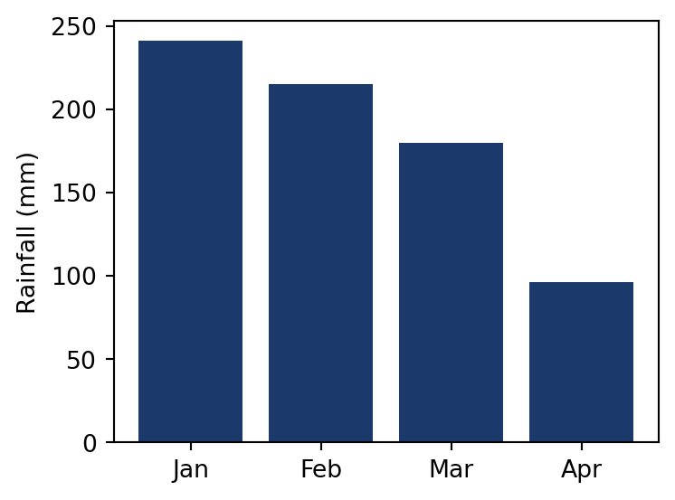
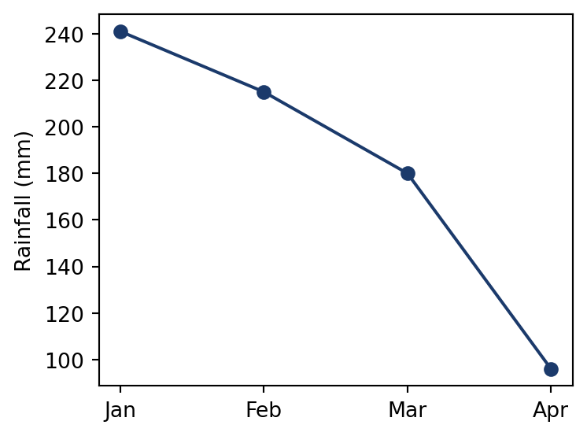
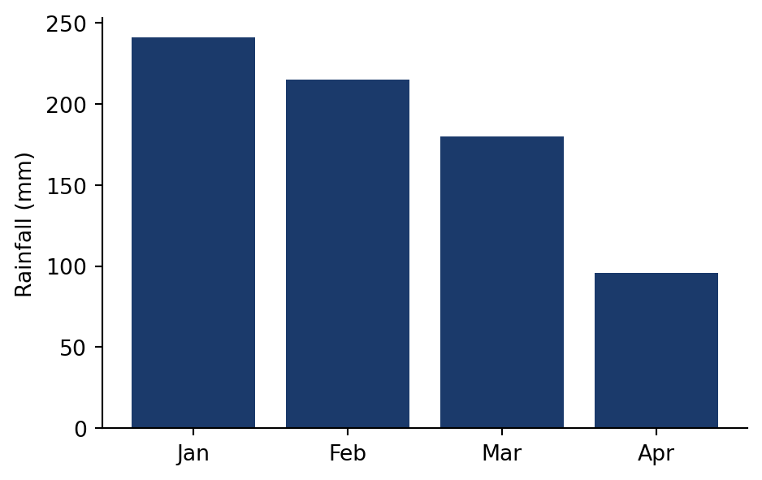

[-0.558 1.954 0.161]
[ 0.667 -0.678 -2.086]Lecture 10 - Reproducible Research and Literate Programming
gh CLIToday we start a new module, and a new question: can anyone check your work?
Amy Cuddy’s “power posing” theory. 78 million TED Talk views, but it could never be replicated
Medicine
Psychology
R files from Harvard Dataverse and tried to run themSo far this sounds like a duty to science. Markowetz (2015) argues you should do it for yourself:
Reason 2 alone will save you hours in this course. And keep reason 1 in mind: in a few slides you will meet two famous economists who needed it
Reproducibility is entirely within your control, and that is why this course grades you on it
harder
▲
│
│
easier
reusable
replicable
reproducible
re-runnable
Most published work does not clear the first step
A result is reproducible only if all four of these travel together:
Each one fails on its own:
data/raw/ holds what you collected, and everything else can be rebuilt from itdata/raw/ is read-only: download the files once and never touch them again01-clean.py, 02-analyse.py) make the run order part of the namedata/clean/ and output/ are disposable: delete them and the scripts bring them backdata/clean/ and output/ in .gitignore and commit only sourcesREADME.md explains the project to the next person, who is usually you in six monthsIf you deleted everything except data/raw/ and scripts/, could you rebuild the project?
# Rainfall and crop yields in Brazil
Analysis of rainfall and maize yields, 2000-2024.
## Data
- data/raw/rainfall.csv: INMET, downloaded 12 Sep 2026
- data/raw/yields.csv: IBGE, downloaded 12 Sep 2026
## How to rebuild
Run the scripts in order:
python scripts/01-clean.py
python scripts/02-analyse.py
quarto render report.qmd
## Environment
Python 3.13, pandas 3.0, matplotlib 3.10The single most common reason code fails on another machine:
Anyone else who runs it gets:
/) and names one exact spot on one exact machine/Users/ana. The script fails everywhere else, however good the rest of the code ispwd in the shellHardcoded paths were among the top causes of failure in the Trisovic study. The fix costs nothing
Write paths relative to the project folder, and the project works anywhere:
Use pathlib when you need to build paths safely across operating systems:
pathlib handles the separator for you, so the same line works on macOS, Linux, and Windows.qmd file, which is usually what you wantos.chdir(). It changes state halfway through a script and makes the rest of the file hard to followIf your code contains your username, it is not reproducible
Run this twice, get two answers, and the numbers in your report change on every render:
[-0.558 1.954 0.161]
[ 0.667 -0.678 -2.086]Set a seed first and the sequence is fixed, so anyone running your code gets exactly what you got:
np.random is a pseudorandom generator: a formula that walks through a fixed sequence of numbersrandom and scikit-learn’s random_state= need seeding separatelyAt minimum, note the versions in your README:
You can also ask pip for the full list:
A version list helps the next person diagnose a failure. Module 08 adds the tools that prevent one: virtual environments, uv, and containers. Until then, write the versions down
**bold**, - list, [link](url).qmd renders to HTML, PDF, Word, slides, websites, books, and dashboardsformat: line%%{
init: {
"theme": "dark",
"themeCSS": ".label foreignObject, .cluster-label foreignObject { font-size: 90%; overflow: visible; }"
}
}%%
flowchart LR
A1[qmd] --> C{"knitr<br>(R)"}
A1[qmd] --> B{"Jupyter<br>(Python)"}
A2[ipynb] --> B{"Jupyter<br>(Python)"}
B --> D[md]
C --> D[md]
D --> E{Pandoc}
E --> F[pdf]
E --> G[docx]
E --> H[html]
E --> I[...]
subgraph engine [Engine]
B
C
end
.qmd extension, but you can also feed Jupyter notebooks (.ipynb) straight into Quarto with some YAML configuration.qmd → engine (Jupyter or knitr) → .md → Pandoc → final outputQuarto 1.9.38
[✓] Checking environment information...
[✓] Checking versions of quarto binary dependencies...
Pandoc version 3.8.3: OK
Dart Sass version 1.87.0: OK
[✓] Checking Quarto installation......OK
Version: 1.9.38
[✓] Checking tools....................OK
TinyTeX: v2026.04
[✓] Checking LaTeX....................OK
[✓] Checking basic markdown render....OK
[✓] Checking Python 3 installation....OK
Version: 3.13.13
Jupyter: 5.9.1Run this first whenever something stops working. Your version numbers will differ from mine, and that is fine
.qmd file is plain text. VS Code, RStudio, Jupyter Lab, Neovim, or Notepad: they all workOf course, there is a CLI for that! Quarto has several commands (quarto --help lists them), but two do almost all the work:
Terminal
render builds the document once. Use it when you are donepreview keeps a live version open while you write. Use it the rest of the timereport.qmd becomes report.html---)key: value pairs, where indentation creates nesting. Use spaces: tabs are illegal in YAMLformat: html is the short form. Indent underneath it to pass options, as on the leftexecute: sets defaults for every chunk in the documenttitle: "Quarto: a first look"_quarto.yml, GitHub Actions, and Docker Compose. Learn it once{python} open a chunk; three backticks close it#| are chunk options, in YAML style:
echo: false hides the code, keeps the outputeval: false shows the code, skips running itwarning: false hides warningslabel names the chunk, so you can cross-reference figures| Option | Effect |
|---|---|
echo: false |
hide the code, keep the output |
eval: false |
show the code, do not run it |
include: false |
run the code, show nothing |
warning: false |
hide warnings |
label: fig-rain |
name the chunk for cross-references |
fig-cap: "..." |
put a caption under the figure |
layout-ncol: 2 |
arrange the outputs in columns |
#| options apply to one chunkfig- for figures, tbl- for tables, and also eq-, sec-, lst-@fig-rain in your text becomes “Figure 1”, numbered for youlayout-ncol: 2 puts two plots side by side, and echo: false keeps the code out of the reader’s way:
What the reader sees:


Both figures came straight from the code at render time. Change the data and they update themselves
jupyter: python3---
title: "Palmer Penguins Demo"
format:
html:
code-fold: true
jupyter: python3
---
## Meet Quarto
Quarto enables you to weave together content and
executable code into a finished document. To learn
more about Quarto see <https://quarto.org>.
```{python}
#| echo: false
#| message: false
import seaborn as sns
from palmerpenguins import load_penguins
sns.set_style('whitegrid')
penguins = load_penguins()
g = sns.lmplot(x="flipper_length_mm",
y="body_mass_g",
hue="species",
height=7,
data=penguins,
palette=['#FF8C00','#159090','#A034F0'])
g.set_xlabels('Flipper Length')
g.set_ylabels('Body Mass')code-fold: true tucks the code behind a toggle, so readers who want it can still find it## headingcode-fold: true at workCreate a Quarto document from scratch and render it to HTML.
weather.qmd## heading and a short paragraphUse this data so everyone gets the same answer:
Stuck? The option that hides code is on the chunk options slide, and quarto check diagnoses a broken installation
.qmd file, one render command, many output formatsfreeze: rendering documents without re-running the worldThe complete weather.qmd:
---
title: "Rainfall report"
author: "Your name"
format: html
jupyter: python3
---
## Rainfall in the first four months
Rainfall fell steadily from January to April, with April
receiving less than half of January's total.
```{python}
import pandas as pd
rain = pd.DataFrame({
"month": ["Jan", "Feb", "Mar", "Apr"],
"mm": [241, 215, 180, 96]
})
rain
```
```{python}
#| echo: false
import matplotlib.pyplot as plt
plt.bar(rain["month"], rain["mm"], color="#1B3A6B")
plt.ylabel("Rainfall (mm)")
plt.show()
```Then render it:
#| echo: false is the option that hides the code but keeps the output, which is what question 5 asked for.
The chart your second chunk produces:
